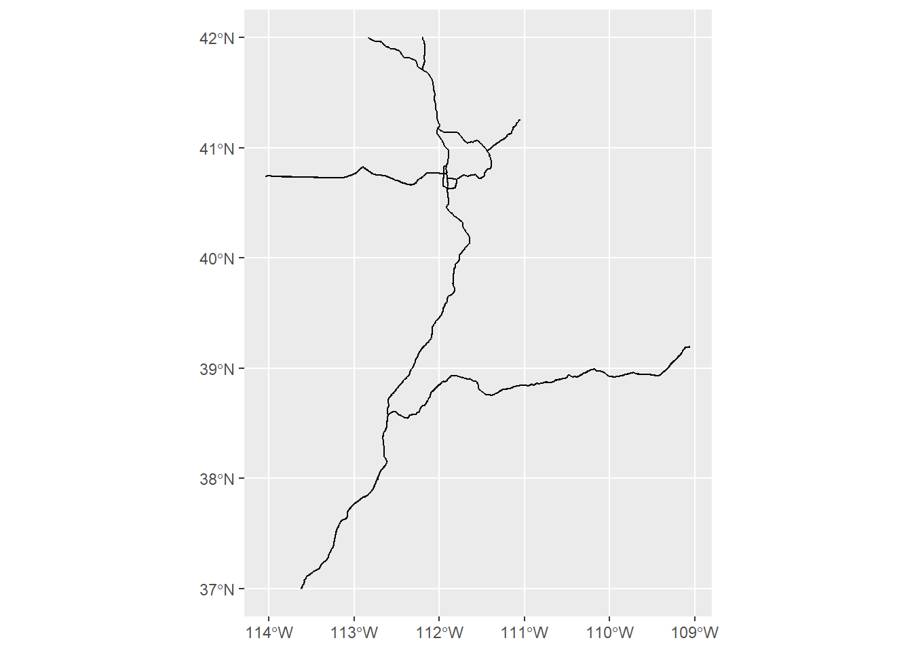
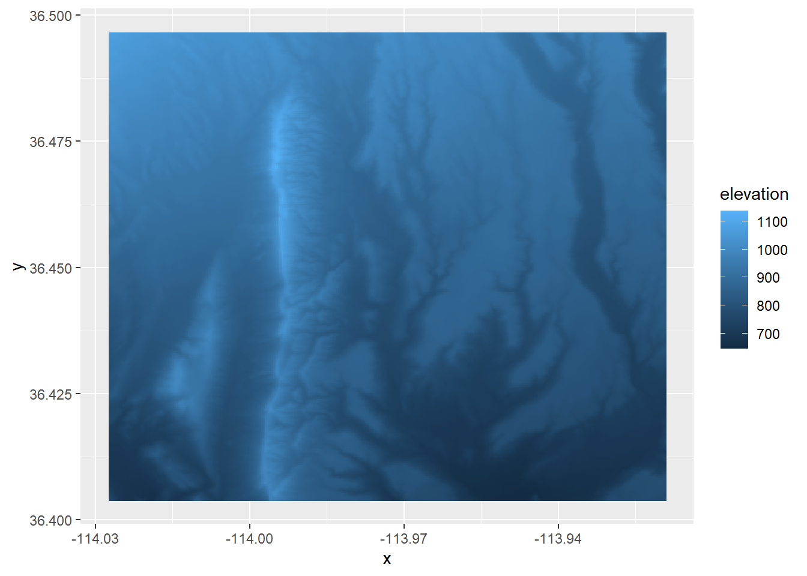

Chapter 3 Spatial Data in R
3.1 Vectors
The primary packages that deal with these features are sf and sp
sf means “simple feature” while sp is short for “spatial.” This website goes into more detail about these packages and the specifics about objects from these packages.
Please note, however, that sp is being deprecated soon and R users are encouraged to solely use sf. So while sp functions still work for now, we’re going to consider it deprecated and just go over sf in this workshop.
3.1.1 Loading vector data from a spreadsheet
You will often have a spreadsheet of data that have two columns of latitude and longitude (and potentially other columns for the attributes of these features).
## Site Latitude Longitude
## 1 1 38.94893 -110.9233
## 2 2 40.40730 -112.5923
## 3 3 40.58137 -110.1357
## 4 4 41.04609 -113.3415
## 5 5 40.78323 -110.8535
## 6 6 41.07762 -112.0717## [1] "data.frame"How can we convert this data table into a spatial object?
We’ll use the function st_as_sf() to convert an object of another class to an sf object. As with any function, you can always type ?st_as_sf in the console to remind yourself what the function does and what arguments you need to add. In this case, the non-optional arguments are x (the object we want to convert, in this case our sites data frame) and coords (the columns in the data frame that have the coordinate data).
The argument crs is optional but we should add it so that our spatial object has a coordinate reference system. Because our coordinates are lat/long, we should tell st_as_sf that our crs is WGS84 lat/long (Remember that the EPSG code for WGS84 lat/long is 4326).
## Simple feature collection with 6 features and 1 field
## Geometry type: POINT
## Dimension: XY
## Bounding box: xmin: -113.3415 ymin: 38.94893 xmax: -110.1357 ymax: 41.07762
## Geodetic CRS: WGS 84
## Site geometry
## 1 1 POINT (-110.9233 38.94893)
## 2 2 POINT (-112.5923 40.4073)
## 3 3 POINT (-110.1357 40.58137)
## 4 4 POINT (-113.3415 41.04609)
## 5 5 POINT (-110.8535 40.78323)
## 6 6 POINT (-112.0717 41.07762)Now when we look at the head of sites_sf it also prints out some information about this spatial object: it is a simple feature, it is a POINT object, the min/max coordinates (the bounding box), and the CRS. Note that the “Longitude” and “Latitude” columns turned into a “geometry” column. We can also check this information with separate functions: st_bbox and st_crs
## xmin ymin xmax ymax
## -113.79094 37.09849 -109.43727 41.08479## Coordinate Reference System:
## User input: EPSG:4326
## wkt:
## GEOGCRS["WGS 84",
## ENSEMBLE["World Geodetic System 1984 ensemble",
## MEMBER["World Geodetic System 1984 (Transit)"],
## MEMBER["World Geodetic System 1984 (G730)"],
## MEMBER["World Geodetic System 1984 (G873)"],
## MEMBER["World Geodetic System 1984 (G1150)"],
## MEMBER["World Geodetic System 1984 (G1674)"],
## MEMBER["World Geodetic System 1984 (G1762)"],
## MEMBER["World Geodetic System 1984 (G2139)"],
## ELLIPSOID["WGS 84",6378137,298.257223563,
## LENGTHUNIT["metre",1]],
## ENSEMBLEACCURACY[2.0]],
## PRIMEM["Greenwich",0,
## ANGLEUNIT["degree",0.0174532925199433]],
## CS[ellipsoidal,2],
## AXIS["geodetic latitude (Lat)",north,
## ORDER[1],
## ANGLEUNIT["degree",0.0174532925199433]],
## AXIS["geodetic longitude (Lon)",east,
## ORDER[2],
## ANGLEUNIT["degree",0.0174532925199433]],
## USAGE[
## SCOPE["Horizontal component of 3D system."],
## AREA["World."],
## BBOX[-90,-180,90,180]],
## ID["EPSG",4326]]st_crs printed out a lot of information, but the important things to note are that we (the user) inputted EPSG: 4326, its datum is “World Geodetic System 1984” (or WGS 84), its axes are latitude and longitude, and its units are “degree” (as opposed to a linear unit like m that we might see in a projected crs). It’s always good practice to double check the CRS of your object before you perform any analysis.
Note that now when we look at the class of sites_sf it has two classes: sf and data.frame.
## [1] "sf" "data.frame"This is one of the great things about sf: because sf objects remain as class data.frame, it makes it easy to work with an sf object like you would with any data frame.
Now that it’s a spatial object, let’s plot it and see what it looks like!
This object only has one attribute (“Site”). If it had more than one, plotting in base R (i.e. using the plot function) plots all attributes (it will actually only plot 10 and will give you a warning if there are more than 10 attributes).
To just plot the feature’s shape, we can use st_geometry to extract the geometry of the vector
We can also use ggplot2 to plot sf objects. ggplot2 has a function called geom_sf, which makes it easy to visualize sf objects with ggplot2
ggplot(sites_sf) +
geom_sf() # note that we don't need to tell ggplot what it should consider x and y to be; that's already built in with the "geometry" column!Remember, though, that this workshop will not cover how to make nice maps in R (that will be in the next workshop). I just bring this up because you would want to be sure the data you’re working with looks like what you might expect it to, so you would want to make a quick plot before moving on to analysis.
3.1.2 Loading vector data from a shapefile
A lot of the time, you will have spatial data already saved as a shapefile. How do we load that into R?
We’ll use the function st_read which takes two arguments: dsn (data source name), which is essentially the folder where the shapefile is located, and layer, which is the name of file (without any extensions). layer is technically optional because dsn will choose the first file in that folder, so if the shapefile is the only file in that folder, then dsn will automatically choose the file. But I like to specify the layer name to avoid any mishaps.
# Shapefile: Interstates in Utah
interstate_sf <- st_read(dsn = "Data/Examples/utah_interstate", layer = "utah_interstate")## Reading layer `utah_interstate' from data source
## `C:\Users\RonanHart\Documents\Projects\R_Spatial_Visualization_Workshop\Data\Examples\utah_interstate'
## using driver `ESRI Shapefile'
## Simple feature collection with 1848 features and 9 fields
## Geometry type: LINESTRING
## Dimension: XY
## Bounding box: xmin: -114.0437 ymin: 37.00002 xmax: -109.0513 ymax: 42.00117
## Geodetic CRS: WGS 84You’ll note that as we read in a shapefile with st_read, it automatically prints out the information about this feature (if you don’t want R to print this, put quiet = FALSE in the function).
Again, we can check this information separately (in case we forget or we need to check later in the analysis). We can also check the first few rows of the data frame to see what kind of attributes there are, and we can plot the feature to make sure it looks like what we expect it to be.
## xmin ymin xmax ymax
## -114.04367 37.00002 -109.05128 42.00117## Coordinate Reference System:
## User input: WGS 84
## wkt:
## GEOGCRS["WGS 84",
## DATUM["World Geodetic System 1984",
## ELLIPSOID["WGS 84",6378137,298.257223563,
## LENGTHUNIT["metre",1]]],
## PRIMEM["Greenwich",0,
## ANGLEUNIT["degree",0.0174532925199433]],
## CS[ellipsoidal,2],
## AXIS["latitude",north,
## ORDER[1],
## ANGLEUNIT["degree",0.0174532925199433]],
## AXIS["longitude",east,
## ORDER[2],
## ANGLEUNIT["degree",0.0174532925199433]],
## ID["EPSG",4326]]## Simple feature collection with 6 features and 9 fields
## Geometry type: LINESTRING
## Dimension: XY
## Bounding box: xmin: -112.9847 ymin: 38.5741 xmax: -111.8053 ymax: 40.83991
## Geodetic CRS: WGS 84
## OBJECTID FULLNAME NAME POSTTYPE SPEED_LMT DOT_HWYNAM DOT_SRFTYP
## 1 523 I-15 NB FWY I-15 NB FWY 75 I-15 P
## 2 649 I-215W SB FWY I-215W SB FWY 65 I-215 P
## 3 857 I-80 WB FWY I-80 WB FWY 75 I-80 P
## 4 1006 I-215W NB FWY I-215W NB FWY 65 I-215 P
## 5 1032 I-15 NB FWY I-15 NB FWY 75 I-15 P
## 6 1106 I-215E SB FWY I-215E SB FWY 65 I-215 P
## DOT_AADT UNIQUE_ID geometry
## 1 21000 12SUH60347079_I-15 NB_FWY LINESTRING (-112.6033 38.57...
## 2 NA 12TVL19841035_I-215W SB_FWY LINESTRING (-111.9491 40.74...
## 3 NA 12TUL32701512_I-80 WB_FWY LINESTRING (-112.9847 40.76...
## 4 37000 12TVL22892135_I-215W NB_FWY LINESTRING (-111.9145 40.83...
## 5 22000 12SUJ79150753_I-15 NB_FWY LINESTRING (-112.4074 38.89...
## 6 68000 12TVL31740094_I-215E SB_FWY LINESTRING (-111.8053 40.67...
3.1.3 Projecting vector data
So far all of our vector data has only been in WGS 84 lat/long CRS. More than likely you will want to work in a projected coordinate system. So how do we re-project (or transform) features in R?
We will use the sf function st_transform()
This function needs the object you want to re-project and the target CRS.
What CRS should we work in? As was stated in the “GIS basics” chapter, UTM is a popular projection because it’s localized and allows you to work with with linear metrics like length, area, and distance. Since both of these features (our site data and Utah interstates) are located in Utah, we would use UTM 12N. We can stay in the WGS 84 datum, but for the purposes of demonstration, let’s change to NAD83. (Remember from the previous chapter that there is not much difference between these datums, so it’s up to you if you want to use a more localized datum (NAD83) or a more recent datum (WGS84)). The EPSG code for NAD83 UTM 12N is 26912. (If you want to work in WGS84 UTM 12N, the EPSG code is 32612)
## Coordinate Reference System:
## User input: EPSG:26912
## wkt:
## PROJCRS["NAD83 / UTM zone 12N",
## BASEGEOGCRS["NAD83",
## DATUM["North American Datum 1983",
## ELLIPSOID["GRS 1980",6378137,298.257222101,
## LENGTHUNIT["metre",1]]],
## PRIMEM["Greenwich",0,
## ANGLEUNIT["degree",0.0174532925199433]],
## ID["EPSG",4269]],
## CONVERSION["UTM zone 12N",
## METHOD["Transverse Mercator",
## ID["EPSG",9807]],
## PARAMETER["Latitude of natural origin",0,
## ANGLEUNIT["degree",0.0174532925199433],
## ID["EPSG",8801]],
## PARAMETER["Longitude of natural origin",-111,
## ANGLEUNIT["degree",0.0174532925199433],
## ID["EPSG",8802]],
## PARAMETER["Scale factor at natural origin",0.9996,
## SCALEUNIT["unity",1],
## ID["EPSG",8805]],
## PARAMETER["False easting",500000,
## LENGTHUNIT["metre",1],
## ID["EPSG",8806]],
## PARAMETER["False northing",0,
## LENGTHUNIT["metre",1],
## ID["EPSG",8807]]],
## CS[Cartesian,2],
## AXIS["(E)",east,
## ORDER[1],
## LENGTHUNIT["metre",1]],
## AXIS["(N)",north,
## ORDER[2],
## LENGTHUNIT["metre",1]],
## USAGE[
## SCOPE["Engineering survey, topographic mapping."],
## AREA["North America - between 114°W and 108°W - onshore and offshore. Canada - Alberta; Northwest Territories; Nunavut; Saskatchewan. United States (USA) - Arizona; Colorado; Idaho; Montana; New Mexico; Utah; Wyoming."],
## BBOX[31.33,-114,84,-108]],
## ID["EPSG",26912]]Note that the coordinates of the WGS84 object compared the coordinates of the projected object are different.
## Geometry set for 1848 features
## Geometry type: LINESTRING
## Dimension: XY
## Bounding box: xmin: -114.0437 ymin: 37.00002 xmax: -109.0513 ymax: 42.00117
## Geodetic CRS: WGS 84
## First 5 geometries:## Geometry set for 1848 features
## Geometry type: LINESTRING
## Dimension: XY
## Bounding box: xmin: 242993.7 ymin: 4098090 xmax: 668288.9 ymax: 4651339
## Projected CRS: NAD83 / UTM zone 12N
## First 5 geometries:The coordinates for the object in WGS84 are in lat/long and the units are decimal degrees. The coordiantes for the projected object are in UTM and the untis are meters.
REMINDER: You should always double-check the CRS of every feature and object you’re working with because you want to make sure everything is projected to the same CRS! If they’re not, it could result in inaccurate analysis and plotting. Depending on what functions you’re using, R may give you a warning or error that the CRS of one feature and another don’t match, but it’s best not to rely on this and just double-check yourself.
3.1.4 Saving vector data
Once you’ve created or modified a spatial object, most likely you want to save it so you can use it later or share with collaborators. There are many files types that can hold spatial data, but the most commonly used are ESRI Shapefile (which can be used in ArcGIS software), KML (which can be used with Google Earth), GeoJSON, and PostgreSQL. If you’re curious what other file types are out there, you can use function st_drivers() for sf objects. In this workshop, I will focus just on ESRI Shapefiles.
If you’ve worked with shapefiles before, you’ve likely noticed that a shapefile is actually a collection of files with the extensions .dbf, .prj, .shp, and .shx. It’s often easier to organize and share shapefiles if they’re in their own folder. If you don’t already have a folder ready for any shapefiles that you’re ready to save, you can, of course, manually make one in the File Explorer. But you can also create folders in R! I, personally, often like to do this because it helps streamline my process and keeps the workflow reproducible. To do so we’ll use the functions dir.exists() to check if the directory (or folder) exists or not, and if it doesn’t we’ll use dir.create() to create a directory.
out_dir <- "Data/Examples/Sites_shp" # name what you want the folder to be and save it in an object
if(!dir.exists(out_dir)){ # this if statement is basically saying "if out_dir does NOT exist..." (the NOT is from the exclamation mark)
dir.create(out_dir) # and if out_dir does NOT exist, then dir.create will create it
}Now that we’ve created a new directory for this shapefile to go to, let’s save our shapefile! For sf objects we’ll use the function st_write. This function takes the object you’re saving, the dsn (or the folder) you want to save it to, the layer (or the name you want to save the file as, do NOT add an extension), and the driver (meaning if you’re saving it as an ESRI Shapefile, KML, etc.)
A note about sf and tidyverse
As mentioned earlier, sf works really well with tidyverse. If you are familiar with tidyverse then you know that one pro of this package is the pipe (%>%) which lets you perform multiple functions at once without getting cluttered and hard to read. Functions for sf can easily be incorporated into the tidyverse piping method as well. For an example, we can load a csv file, convert it to an sf object, project it, and save it all at once using the pipes.
read.csv("Data/Examples/Sites.csv") %>%
st_as_sf(coords = c("Longitude", "Latitude"), crs = 4326) %>%
st_transform(crs = 26912) %>%
st_write(dsn = "data", layer = "Sites_shp", driver = "ESRI Shapefile")Of course, this requires that you already know what the column names for the coordinates are, and this might not be the best example for a series of functions to use with the pipe. But this type of process is a useful tool to know, especially if you are already familiar with and frequently use tidyverse.
3.2 Rasters
The primary package that deals with rasters is terra. raster also works with rasters but, just like sp, will be deprecated soon, so in this workshop we will work with terra. (Note that raster is functionally very similar to terra, so it is easy to switch between the two. But while raster is still functional, it will no longer be updated).
3.2.1 Load a raster
When you want to load a raster that is saved in a directory, you’ll use the function rast. When loading a raster that is already saved, the only argument you need is the filename (including the directory and extension)
## class : SpatRaster
## dimensions : 334, 390, 1 (nrow, ncol, nlyr)
## resolution : 0.000278, 0.000278 (x, y)
## extent : -114.0275, -113.9191, 36.40381, 36.49667 (xmin, xmax, ymin, ymax)
## coord. ref. : lon/lat WGS 84 (EPSG:4326)
## source : elevation.tif
## name : elevation
## min value : 645.7881
## max value : 1137.6703When we examine the raster (by simply calling the object like we did above), we get a lot of useful information.
class: the class of the raster (this could beRasterLayer,RasterStack, orRasterBrick)dimensions: the number of rows, columns, and cellsresolution: the size of the cellsextent: the min/max x and ycrs: the coordinate reference systemvalues: the min/max values this raster contains
I recommend always examining a raster after you load it in to make sure the information looks like what you would expect it to be.
You can also check all of this information with separate functions:
## [1] "SpatRaster"
## attr(,"package")
## [1] "terra"## [1] 334## [1] 390## [1] 130260## [1] 0.000278 0.000278## SpatExtent : -114.027500001, -113.919080001, 36.403814658, 36.496666658 (xmin, xmax, ymin, ymax)cat(crs(elev)) # I put cat() around crs() because it will otherwise print out a full string full of "\n" (which tell R to print on a new line, so using cat() will make this output more readable)## GEOGCRS["WGS 84",
## ENSEMBLE["World Geodetic System 1984 ensemble",
## MEMBER["World Geodetic System 1984 (Transit)"],
## MEMBER["World Geodetic System 1984 (G730)"],
## MEMBER["World Geodetic System 1984 (G873)"],
## MEMBER["World Geodetic System 1984 (G1150)"],
## MEMBER["World Geodetic System 1984 (G1674)"],
## MEMBER["World Geodetic System 1984 (G1762)"],
## MEMBER["World Geodetic System 1984 (G2139)"],
## ELLIPSOID["WGS 84",6378137,298.257223563,
## LENGTHUNIT["metre",1]],
## ENSEMBLEACCURACY[2.0]],
## PRIMEM["Greenwich",0,
## ANGLEUNIT["degree",0.0174532925199433]],
## CS[ellipsoidal,2],
## AXIS["geodetic latitude (Lat)",north,
## ORDER[1],
## ANGLEUNIT["degree",0.0174532925199433]],
## AXIS["geodetic longitude (Lon)",east,
## ORDER[2],
## ANGLEUNIT["degree",0.0174532925199433]],
## USAGE[
## SCOPE["Horizontal component of 3D system."],
## AREA["World."],
## BBOX[-90,-180,90,180]],
## ID["EPSG",4326]]summary(values(elev)) # put this in summary() so we can get an idea of the spread of values (rather than a list of all of the values themselves)## elevation
## Min. : 645.8
## 1st Qu.: 798.5
## Median : 869.5
## Mean : 864.4
## 3rd Qu.: 932.0
## Max. :1137.7We can also plot the raster to check that it looks like what we would expect it to be
We can also plot a raster with ggplot2, but we need to do an extra step of converting it to a data frame first. We’ll use the base R function as.data.frame and we need to be sure to put xy = TRUE in the arguments. After we do that, we can use the function geom_raster() within ggplot. Within the aes() function in geom_raster(), we need to put the columns that correspond to the x and y locations and what the fill value should represent (in this case, elevation).
elev_df <- as.data.frame(elev, xy = TRUE)
head(elev_df) # the data frame of a raster contains columns for the x and y locations and the corresponding cell value## x y elevation
## 1 -114.0274 36.49653 1082.456
## 2 -114.0271 36.49653 1081.739
## 3 -114.0268 36.49653 1080.975
## 4 -114.0265 36.49653 1079.712
## 5 -114.0262 36.49653 1077.750
## 6 -114.0260 36.49653 1075.466
# You can use the pipe to run this process all at once
elev %>%
as.data.frame(xy = TRUE) %>%
ggplot() +
geom_raster(aes(x = x, y = y, fill = elevation)) # This requires that you know the column name of the raster valuesAn important thing to note is that, depending on the size of the raster, it might be too computationally expensive to convert a raster to a data frame and R may give you an error.
(Another reminder that we will not cover how to make these maps look nice, this is just a quick way to check that your raster looks the way that you think it should)
Loading a raster with more than one band
In the example above, the raster we loaded only had one band. Let’s try loading in a raster downloaded from SNODAS (Snow Data Assimilation System) which has 2 bands: SWE (snow water equivalent) and snow depth. (SNODAS offers daily rasters, and this example raster is from 02-23-2019). terra makes it easy to load a stacked raster because we can just use the same function rast.
## class : SpatRaster
## dimensions : 12, 13, 2 (nrow, ncol, nlyr)
## resolution : 0.008333333, 0.008333333 (x, y)
## extent : -114.025, -113.9167, 36.4, 36.5 (xmin, xmax, ymin, ymax)
## coord. ref. : lon/lat WGS 84 (EPSG:4326)
## source : snow_20190223.tif
## names : snow_20190223_1, snow_20190223_2
## min values : 0, 0
## max values : 24, 150Let’s plot the raster stack just to make sure it looks like what we might expect:
Note that plotting a raster stack will plot all the layers at once.
The benefit of working with a stack of rasters is that if you need to perform a computation on all of your rasters, you can stack them all togther and the computation will run for every raster layer in the stack. To stack rasters together we use the function c(), similar to how we would add elements to vector.
However, rasters will only stack together if they have the same dimensions, resolution, extent, and crs.
For example, if we try to stack our elevation raster and stack of snow rasters together:
Error: [rast] extents do not match
We get an error that the extents don’t match
## SpatExtent : -114.027500001, -113.919080001, 36.403814658, 36.496666658 (xmin, xmax, ymin, ymax)## SpatExtent : -114.025, -113.916666666667, 36.3999999996667, 36.4999999996667 (xmin, xmax, ymin, ymax)They’re very close, but they need to be exact. Why can’t I just not stack them and run seperate computations on these rasters? You can, but your raster cells will be slightly off from each other and may result in inaccurate results and inference.

Figure 3.1: A stack of rasters, showing how each cell would correspond to the ones on top and below
In a future section, we’ll talk about how to make your rasters line up so you can stack them all together.
3.2.2 Create a raster
To create a raster from scratch, we’ll use the same function rast() but instead of the filename or band as arguments, we’ll include the extent and resolution that we want. In this example, let’s just make something random.
set.seed(1) # this is to make the randomness of runif the same every time
x <- runif(1, min = 0, max = 10)
y <- runif(1, min = 0, max = 10)
r_new <- rast(xmin = x, xmax = x + 10, ymin = y, ymax = y + 10, resolution = 1)
r_new## class : SpatRaster
## dimensions : 10, 10, 1 (nrow, ncol, nlyr)
## resolution : 1, 1 (x, y)
## extent : 2.655087, 12.65509, 3.721239, 13.72124 (xmin, xmax, ymin, ymax)
## coord. ref. : lon/lat WGS 84Note that because we didn’t specify the CRS in the arguments, it defaulted to WGS84 lat/long.
Right now this raster is empty. We can check with the function values()
## lyr.1
## [1,] NaN
## [2,] NaN
## [3,] NaN
## [4,] NaN
## [5,] NaN
## [6,] NaNWe’ll use the same function to assign fill the raster with values. If you noticed, there are 100 total cells that need to be filled, and let’s fill them with random numbers.
## lyr.1
## [1,] 0.5728534
## [2,] 0.9082078
## [3,] 0.2016819
## [4,] 0.8983897
## [5,] 0.9446753
## [6,] 0.6607978## class : SpatRaster
## dimensions : 10, 10, 1 (nrow, ncol, nlyr)
## resolution : 1, 1 (x, y)
## extent : 2.655087, 12.65509, 3.721239, 13.72124 (xmin, xmax, ymin, ymax)
## coord. ref. : lon/lat WGS 84
## source(s) : memory
## name : lyr.1
## min value : 0.01339033
## max value : 0.99190609Why would you need to create a raster from scratch?
- If you’ve written code to perform a calculation or an analysis on a raster, it’s good to check that your code is doing what you think it’s doing. A good way to test the code is to try it out on a “dummy” raster
- If you’re asking for help on your code (on Stack Overflow for example), it’s good practice to either include your data (which is often very difficult to do) or to create a reproducible example. Knowing how to create fake data or fake rasters is useful to know.
- We’ll see in the next section another useful reason for creating a raster from scratch.
3.2.3 Project a raster
Let’s go back to the elevation raster we loaded earlier. If you noticed, the CRS of this raster is WGS84 UTM12N, as opposed to NAD83 UTM12N that we used earlier for our vector data.
## GEOGCRS["WGS 84",
## ENSEMBLE["World Geodetic System 1984 ensemble",
## MEMBER["World Geodetic System 1984 (Transit)"],
## MEMBER["World Geodetic System 1984 (G730)"],
## MEMBER["World Geodetic System 1984 (G873)"],
## MEMBER["World Geodetic System 1984 (G1150)"],
## MEMBER["World Geodetic System 1984 (G1674)"],
## MEMBER["World Geodetic System 1984 (G1762)"],
## MEMBER["World Geodetic System 1984 (G2139)"],
## ELLIPSOID["WGS 84",6378137,298.257223563,
## LENGTHUNIT["metre",1]],
## ENSEMBLEACCURACY[2.0]],
## PRIMEM["Greenwich",0,
## ANGLEUNIT["degree",0.0174532925199433]],
## CS[ellipsoidal,2],
## AXIS["geodetic latitude (Lat)",north,
## ORDER[1],
## ANGLEUNIT["degree",0.0174532925199433]],
## AXIS["geodetic longitude (Lon)",east,
## ORDER[2],
## ANGLEUNIT["degree",0.0174532925199433]],
## USAGE[
## SCOPE["Horizontal component of 3D system."],
## AREA["World."],
## BBOX[-90,-180,90,180]],
## ID["EPSG",4326]]If we were going to do some sort of analysis on our vector data and raster data, we want all of our spatial objects to be in the same CRS so that we know that our layers are truly stacked on top of the other (for plotting and analysis). For that reason, we need to project this raster to NAD83 UTM12N. To do so, we’ll use the function project
## class : SpatRaster
## dimensions : 384, 364, 1 (nrow, ncol, nlyr)
## resolution : 27.59883, 27.59883 (x, y)
## extent : 228498.9, 238544.8, 4032704, 4043302 (xmin, xmax, ymin, ymax)
## coord. ref. : NAD83 / UTM zone 12N (EPSG:26912)
## source(s) : memory
## name : elevation
## min value : 645.913
## max value : 1136.788Wait, let’s take a look at the cell resolution again…
## [1] 27.59883 27.59883This elevation raster came from the USGS’s 3D Elevation Program. When I downloaded it, I specified a 1-arcsecond resolution (arcsecond is the unit for long/lat projections), which is equivalent to a 30mX30m resolution in a linear projection (like UTM). So why is the resolution after projecting not actually 30mX30m?
What’s happening is that every cell needs to be projected, causing the cells to be warped and results in slightly off cell measurements.
What if we tried specifying the cell resolution in the projectRaster function?
## class : SpatRaster
## dimensions : 353, 335, 1 (nrow, ncol, nlyr)
## resolution : 30, 30 (x, y)
## extent : 228498.9, 238548.9, 4032704, 4043294 (xmin, xmax, ymin, ymax)
## coord. ref. : NAD83 / UTM zone 12N (EPSG:26912)
## source(s) : memory
## name : elevation
## min value : 645.8972
## max value : 1136.5520We could do this. But can we be sure that all of the cells in this raster would align one-to-one in all of our other rasters? And if they don’t align, can we be sure our analysis and computation on all of our rasters would be correct?
## class : SpatRaster
## dimensions : 389, 334, 2 (nrow, ncol, nlyr)
## resolution : 30, 30 (x, y)
## extent : 228709.8, 238729.8, 4031990, 4043660 (xmin, xmax, ymin, ymax)
## coord. ref. : NAD83 / UTM zone 12N (EPSG:26912)
## source(s) : memory
## names : snow_20190223_1, snow_20190223_2
## min values : 0.00000, 0.0000
## max values : 23.99983, 149.8608Error: [rast] extents do not match
Furthermore, there’s something else happening when rasters are projected. Let’s double-check the help file, ?project. It looks like there’s another argument called method that defaults to "bilinear". Ok…well what does that mean? Bilinear interpretation is basically a way of estimating a value in between two other values.
This essentially means that when you use project, the raster cells are being warped and shifted slightly, so R can’t just simply move the entire raster over, but it needs to know how to estimate the cell values in their new location and new resolution. So should it estimate a value in between two cell values or pick the actual value of the cell it’s closest to? Either way, this will slightly adjust the data:
elev_bilinear <- project(elev, "epsg:26912", res = 30, method = "bilinear")
elev_sum <- project(elev, "epsg:26912", res = 30, method = "sum")
# check the spread of values in the orginal raster
summary(values(elev))## elevation
## Min. : 645.8
## 1st Qu.: 798.5
## Median : 869.5
## Mean : 864.4
## 3rd Qu.: 932.0
## Max. :1137.7## elevation
## Min. : 645.9
## 1st Qu.: 798.5
## Median : 869.5
## Mean : 864.4
## 3rd Qu.: 932.1
## Max. :1136.6
## NA's :6873# check the spread of values in the raster estimated with nearest neighbor
summary(values(elev_sum))## elevation
## Min. : 0.001
## 1st Qu.: 930.229
## Median :1015.933
## Mean :1004.808
## 3rd Qu.:1089.200
## Max. :1329.881
## NA's :6197There’s no right or wrong answer on which method you pick. The project help file recommends using bilinear for continuous rasters (like this elevation raster we’re working with) and sum (or min, q1, med, q3, max, average, mode, or rms) for categorical rasters (in fact, you shouldn’t use bilinear for categorical rasters because it will pick a value that’s in between two values which aren’t real numbers, but are actually stand-ins for a category). In my work I use sum for continuous rasters as well, but bilinear is valid to use as well. (Again, as with everything, it depends on your analysis and your system.) We’ll continue to use bilinear in this workshop.
One thing to keep in mind with projecting rasters is that you should not over-project and re-sample your rasters over and over again. Imagine printing a picture and then making a copy of that printed picture. And then making a copy of the copy. And then a copy of that that copy. Over and over again. Eventually you end up with a warped image that only vaguely resembles the original image. A similar thing can happen if you project and re-sample your rasters even more than once.
(FYI there is no issue with projecting and re-projecting your vector data over and over again. This is because vector data are made up of lines and vertices which are relatively easy to project, and the data within a vector stays the same while it’s being projected.)
Ok, so now that we know the dangers of projecting rasters, what is the best way project a raster? I recommend (and projectRaster also recommends) creating a template raster and using that template as a mold for all of your rasters. (hint: this is where it comes in handy to know how to make a blank raster)
So let’s create a template raster with our desired CRS, cell resolution, and extent. To choose the cell resolution, I recommend picking your set of rasters with the smallest resolution (but keep in mind that this will affect disk space and computation time, so again there’s no right or wrong answer). In this case, elevation (30mX30m) has a smaller resolution than snow (1kmX1km). The extent should be the min and max area of focus, such as your study area.
# create a blank raster with desired parameters. We don't need to add any values to it
template <- rast(crs = "epsg:26912", resolution = c(30, 30),
xmin = 228560, xmax = 238910, ymin = 4032145, ymax = 4043815)
template## class : SpatRaster
## dimensions : 389, 345, 1 (nrow, ncol, nlyr)
## resolution : 30, 30 (x, y)
## extent : 228560, 238910, 4032145, 4043815 (xmin, xmax, ymin, ymax)
## coord. ref. : NAD83 / UTM zone 12N (EPSG:26912)# use the template to project our rasters
# from = focal raster
# to = the raster object with the desired parameters
# method = the method to compute new values
elev_proj_template <- project(elev, template)
snow_proj_template <- project(snow_stack, template)
elev_proj_template## class : SpatRaster
## dimensions : 389, 345, 1 (nrow, ncol, nlyr)
## resolution : 30, 30 (x, y)
## extent : 228560, 238910, 4032145, 4043815 (xmin, xmax, ymin, ymax)
## coord. ref. : NAD83 / UTM zone 12N (EPSG:26912)
## source(s) : memory
## name : elevation
## min value : 645.8929
## max value : 1136.4094## class : SpatRaster
## dimensions : 389, 345, 2 (nrow, ncol, nlyr)
## resolution : 30, 30 (x, y)
## extent : 228560, 238910, 4032145, 4043815 (xmin, xmax, ymin, ymax)
## coord. ref. : NAD83 / UTM zone 12N (EPSG:26912)
## source(s) : memory
## names : snow_20190223_1, snow_20190223_2
## min values : 0.00000, 0.0000
## max values : 23.99982, 149.8712# now we can stack them! This way we know for sure that all cells align with every layer
stack <- c(elev_proj_template, snow_proj_template)
stack## class : SpatRaster
## dimensions : 389, 345, 3 (nrow, ncol, nlyr)
## resolution : 30, 30 (x, y)
## extent : 228560, 238910, 4032145, 4043815 (xmin, xmax, ymin, ymax)
## coord. ref. : NAD83 / UTM zone 12N (EPSG:26912)
## source(s) : memory
## names : elevation, snow_20190223_1, snow_20190223_2
## min values : 645.8929, 0.00000, 0.0000
## max values : 1136.4094, 23.99982, 149.8712Right now the bands’ names (besides “elevation”) are not very descriptive, but we can change their names so that we can more easily remember which band is which. In this case, band 1 is elevation, band 2 is SWE, and band 3 is snow depth. To change the band names, we’ll use the function names()
## class : SpatRaster
## dimensions : 389, 345, 3 (nrow, ncol, nlyr)
## resolution : 30, 30 (x, y)
## extent : 228560, 238910, 4032145, 4043815 (xmin, xmax, ymin, ymax)
## coord. ref. : NAD83 / UTM zone 12N (EPSG:26912)
## source(s) : memory
## names : elevation, swe, snow_depth
## min values : 645.8929, 0.00000, 0.0000
## max values : 1136.4094, 23.99982, 149.87123.2.4 Save a raster
To save a raster we’ll use the function writeRaster. We need to include the raster object that we’re saving, the full file name (including the directory). We can also specify the file type with filetype, but this is often not necessary because writeRaster can guess based on the file extension you provide in filename (e.g., if you save a raster as “filename.tif”, writeRaster automatically guesses that you want to save this raster as a GeoTIFF)
(If you need to save your raster as something besides a GeoTIFF, you can check the different file types by checking the help document for this function by typing ?writeRaster in the console and scrolling down to filetype.)
Note that some raster functions have optional arguments to add filenames and formats so that the funciton will automatically save the output after performing its function.